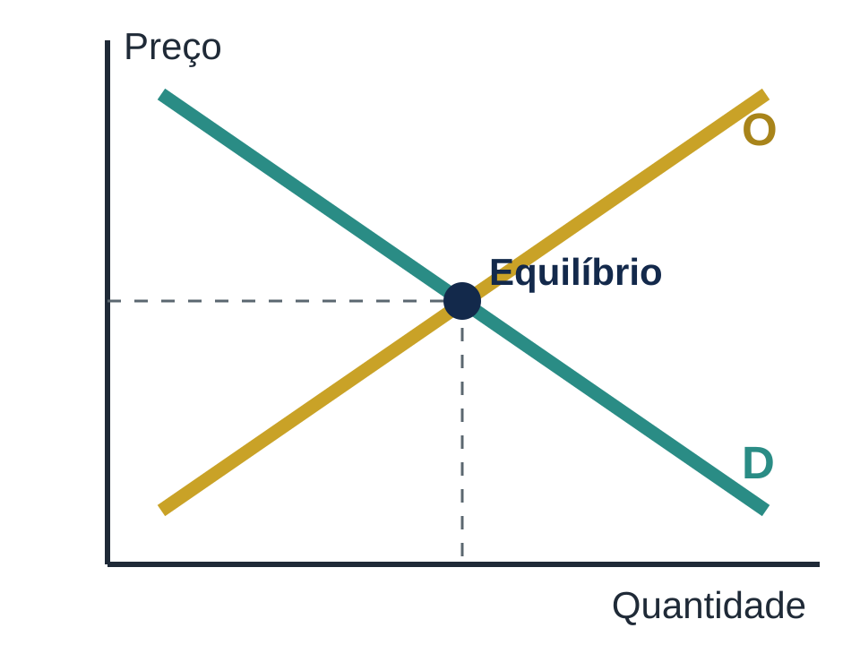
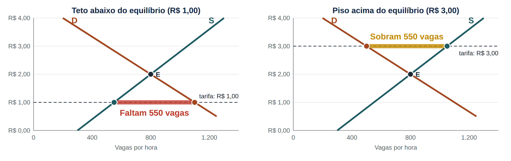
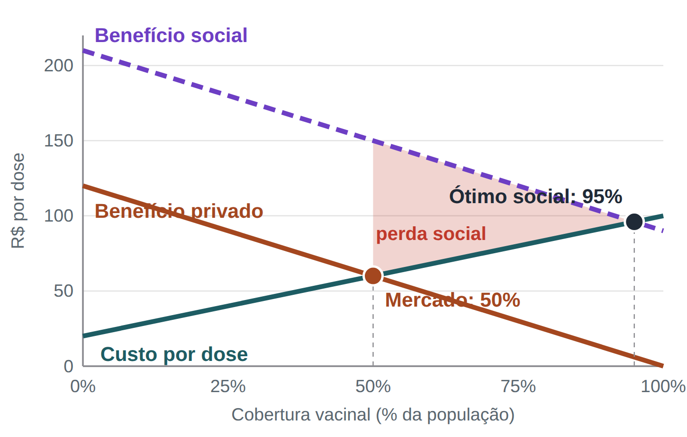
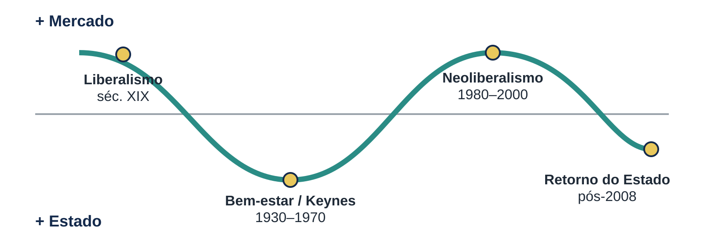

Especialização em Gestão Pública
Estado, Governo e Mercado
Unidade 1 · Introdução à economia; Estado, governo e mercado
DEAD · UAB · Turma 2026/2 · Prof. Dr. Cleiton Franco
Estado, Governo e Mercado
Unidade 1 · Introdução à economia; Estado, governo e mercado
Curso:
Especialização em Gestão Pública (Lato Sensu)
Professor Regente:
Prof. Dr. Cleiton Franco
Turma & Semestre:
2026/2 · 1º bloco
Período da unidade:
09/10 a 18/10/2026
Videoaula 1 · Leitura: COELHO (2014), conceitos básicos
Página de conteúdos: tópicos 1 e 2 do sumário · Fóruns até 18/10
PARTE 1 · TÓPICO 1 DO SUMÁRIO
Introdução à economia: conceitos básicos
Escassez, problemas fundamentais, agentes, sistemas e mercado
Estado, Governo e Mercado · Unidade 1 · Tópico 1 do sumário
O que é economia?
O problema de escolher com recursos limitados
“ Ciência social que estuda como a sociedade emprega recursos escassos para produzir bens e serviços e distribuí-los entre as pessoas.
Escassez
Os recursos são limitados e as necessidades, ilimitadas. Por isso é preciso escolher.
Custo de oportunidade
O valor da melhor alternativa sacrificada. Construir uma ponte pode significar não construir uma escola.
Estado, Governo e Mercado · Unidade 1 · Tópico 1 do sumário
Escassez no orçamento público
EXEMPLO NA GESTÃO PÚBLICA
R$ 5 milhões para uma única obra
A prefeitura pode ampliar a UBS central, pavimentar 3 km de ruas ou reformar duas escolas. Escolher a UBS significa abrir mão das ruas e das escolas: esse é o custo de oportunidade da decisão.
Pergunta do gestor
Qual alternativa gera mais benefício para a população, com os mesmos recursos?
Ferramentas
Diagnóstico de demandas, indicadores, audiências públicas e o PPA orientam a escolha.
Estado, Governo e Mercado · Unidade 1 · Tópico 1 do sumário
Fronteira de possibilidades do orçamento
Com o mesmo orçamento: reformar escolas ou pavimentar ruas?
Km pavimentados × escolas reformadas
COMO LER O GRÁFICO
Cada ponto da curva usa todo o orçamento.
Reformar a 1ª escola custa 1 km de rua; a 4ª custa 6 km.
O custo de oportunidade cresce: essa é a lógica da escassez.
Pontos abaixo da curva indicam desperdício.
Dados hipotéticos, para fins didáticos. Inspirado no exemplo da prefeitura com R$ 5 milhões.
Estado, Governo e Mercado · Unidade 1 · Tópico 1 do sumário
O iceberg do custo
O que o contador vê e o que o economista também vê
| Visão do contador (por mês) | R$ |
| Mensalidade | 800 |
| Livros e material | 200 |
| Transporte | 150 |
| Alimentação extra | 250 |
| Custo contábil | 1.400 |
| Visão do economista (por mês) | R$ |
| Custos explícitos (ao lado) | 1.400 |
| + Salário que deixa de receber | 3.000 |
| Custo de oportunidade | 4.400 |
Custos explícitos são desembolsos; custos implícitos são receitas de que se abre mão (salário, aluguel da terra, juros do capital). A escolha só compensa se o benefício superar o custo de oportunidade total.
Estado, Governo e Mercado · Unidade 1 · Tópico 1 do sumário
Estrada vicinal ou creche?
R$ 3 milhões livres no orçamento de um município do interior de MT
Benefício estimado em 5 anos (R$ milhões)
COMO LER O GRÁFICO
Estradas: R$ 1,50 de benefício por real; creche: R$ 1,80.
Tudo em estradas gera R$ 4,5 milhões: parece bom.
Mas a creche geraria R$ 5,4 milhões: o custo de oportunidade é R$ 0,9 milhão.
Na prática, retornos decrescentes e vínculos legais levam a dividir a verba.
Parâmetros didáticos (não são avaliação de impacto). Ver o estudo de caso interativo na página da disciplina.
Estado, Governo e Mercado · Unidade 1 · Tópico 1 do sumário
Os três problemas econômicos fundamentais
Toda sociedade precisa respondê-los
PROBLEMA 1
O que produzir?
Quais bens e em que quantidade: hospitais ou estradas?
PROBLEMA 2
Como produzir?
Com que tecnologia e com que combinação de fatores?
PROBLEMA 3
Para quem produzir?
Como distribuir o produto e a renda?
A forma de responder a essas perguntas define o sistema econômico.
Estado, Governo e Mercado · Unidade 1 · Tópico 1 do sumário
Fatores de produção e agentes econômicos
| Fator de produção | O que é | Remuneração |
| Terra (recursos naturais) | Solo, água, minérios, florestas | Aluguel (renda da terra) |
| Trabalho | Esforço humano, físico e intelectual | Salário |
| Capital | Máquinas, equipamentos, instalações | Juros |
| Capacidade empresarial | Organização dos demais fatores e assunção de riscos | Lucro |
Famílias
Ofertam fatores e consomem.
Empresas
Contratam fatores e produzem.
Governo
Tributa, provê, regula e redistribui.
Setor externo
Troca bens, serviços e capitais.
Estado, Governo e Mercado · Unidade 1 · Tópico 1 do sumário
Sistemas econômicos
Quem decide e como a economia é coordenada
| Sistema | Quem decide | Mecanismo de coordenação | Propriedade dos meios de produção |
| Economia de mercado (capitalismo) | Consumidores e empresas | Preços, oferta e demanda | Predominantemente privada |
| Economia centralmente planificada (socialismo) | Órgão central de planejamento | Plano e metas de produção | Predominantemente estatal ou coletiva |
| Economia mista | Mercado e Estado | Preços, com regulação e intervenção estatal | Privada, com empresas e serviços públicos |
Todas as economias atuais são mistas. O que muda é o grau de presença do Estado.
Estado, Governo e Mercado · Unidade 1 · Tópico 1 do sumário
Mercado: oferta, demanda e preço
Lei da demanda: tudo o mais constante, preço ↑ → quantidade demandada ↓
Lei da oferta: preço ↑ → quantidade ofertada ↑
Equilíbrio: quantidade demandada = quantidade ofertada
Fora do equilíbrio: preço acima gera sobra; preço abaixo gera falta
Na gestão pública: estacionamento rotativo tabelado abaixo do equilíbrio faz faltar vaga

Estado, Governo e Mercado · Unidade 1 · Tópico 1 do sumário
Quando o governo fixa o preço
EXEMPLO NA GESTÃO PÚBLICA
Tarifa de ônibus congelada abaixo do custo
Se a tarifa fica abaixo do custo por passageiro e não há subsídio, a empresa reduz a frota: os ônibus ficam lotados e os intervalos aumentam. É o excesso de demanda previsto pelo modelo.
PREÇO MÁXIMO (TETO)
Abaixo do equilíbrio
Gera falta do bem ou serviço, filas e perda de qualidade.
PREÇO MÍNIMO (PISO)
Acima do equilíbrio
Gera sobra: produtos sem comprador ou serviço ocioso.
ALTERNATIVA
Subsídio
O poder público cobre parte do custo e mantém a oferta.
Estado, Governo e Mercado · Unidade 1 · Tópico 1 do sumário
Oferta, demanda e preço máximo
Tarifa de ônibus e número de viagens por dia
Viagens por dia (mil), conforme a tarifa
COMO LER O GRÁFICO
Equilíbrio: R$ 4,50, com 100 mil viagens.
Congelada em R$ 3,00, a demanda é de 130 mil e a oferta, de 60 mil.
Faltam 70 mil viagens: ônibus lotados e filas.
Saídas: subsídio ou tarifa que cubra o custo.
Dados hipotéticos, para fins didáticos.
Estado, Governo e Mercado · Unidade 1 · Tópico 1 do sumário
Estacionamento rotativo: teto e piso
A prefeitura fixa a tarifa por hora; o equilíbrio (E) seria R$ 2,00 com 800 vagas

Teto: carros circulando à procura de vaga, estacionamento irregular.
Piso: vagas ociosas, arrecadação menor e menos clientes no comércio.
Estado, Governo e Mercado · Unidade 1 · Tópico 1 do sumário
Elasticidade-preço da demanda
Quanto a quantidade reage ao preço?
ε = variação % da quantidade ÷ variação % do preço (em módulo)
Inelástica (ε < 1)
A quantidade varia menos que o preço. Água, energia, medicamentos. Subir o preço aumenta a receita.
Unitária (ε = 1)
As variações se compensam: a receita não muda.
Elástica (ε > 1)
A quantidade varia mais que o preço. Bens com substitutos. Subir o preço reduz a receita.
Para o gestor: tarifas e tributos sobre bens inelásticos arrecadam mais, mas pesam mais para quem não consegue consumir menos.
Estado, Governo e Mercado · Unidade 1 · Tópico 1 do sumário
Tarifa de água: reajuste de 15%
Serviço autônomo de água com 6 mil ligações · consumo médio de 12 m³ por mês
Receita mensal do serviço (R$ mil)
COMO LER O GRÁFICO
Demanda inelástica (ε = 0,25): o consumo cai 3,8% e a receita sobe 10,7%.
Se fosse elástica (ε = 1,5), o consumo cairia 22,5% e a receita, 10,9%.
Água é inelástica: quem não pode reduzir o consumo paga o reajuste inteiro, daí a tarifa social.
Parâmetros ilustrativos na ordem de grandeza de serviços municipais de água (SNIS). Ver o estudo de caso interativo.
Estado, Governo e Mercado · Unidade 1 · Tópico 1 do sumário
Microeconomia e macroeconomia
Duas formas de olhar a economia
UNIDADES INDIVIDUAIS
Microeconomia
Estuda consumidores, empresas e mercados específicos e a formação dos preços. Ex.: a tarifa do ônibus, o preço do combustível no município.
AGREGADOS DA ECONOMIA
Macroeconomia
Estuda PIB, emprego, inflação, juros, câmbio e contas públicas. Ex.: uma recessão que derruba a arrecadação do município.
Grande parte do debate sobre o papel do Estado é macroeconômico: é o terreno de Keynes, que veremos na Unidade 4.
Estado, Governo e Mercado · Unidade 1 · Tópico 1 do sumário
PARTE 2 · TÓPICO 2 DO SUMÁRIO
Estado, governo e mercado: conceitos e funções
Conceitos fundamentais, falhas de mercado e funções do Estado
Estado, Governo e Mercado · Unidade 1 · Tópico 2 do sumário
Os elementos constitutivos do Estado
Povo
O conjunto de pessoas vinculadas juridicamente ao Estado (os cidadãos).
Território
O espaço físico sobre o qual o Estado exerce seu poder.
Soberania
Poder supremo interno e independência em relação a outros Estados.
O Estado moderno nasce da centralização do poder político (séculos XV a XVII), com exército, tributos e administração permanentes.
Estado, Governo e Mercado · Unidade 1 · Tópico 2 do sumário
Weber: Estado e dominação legítima
Por que as pessoas obedecem?
“ O Estado é a comunidade humana que reivindica, com êxito, o monopólio do uso legítimo da força física em um território.
TRADICIONAL
Costume
Obediência baseada na tradição (o senhor, o monarca).
CARISMÁTICA
Líder
Obediência às qualidades extraordinárias de uma pessoa.
LEGAL-RACIONAL
Lei
Obediência a normas impessoais: base da burocracia moderna.
No Brasil, concursos públicos e os princípios do art. 37 da Constituição (legalidade, impessoalidade, moralidade, publicidade e eficiência) expressam a dominação legal-racional.
Estado, Governo e Mercado · Unidade 1 · Tópico 2 do sumário
Conceitos fundamentais
Estado, governo, administração pública, mercado e sociedade civil
| Conceito | Definição |
| Estado | Organização político-jurídica permanente que detém a soberania sobre um território e sua população. Para Weber, é a comunidade humana que reivindica com êxito o monopólio do uso legítimo da força física em um território. |
| Governo | O grupo que, em dado momento, dirige o Estado e define suas políticas. Governos são transitórios; o Estado é permanente. |
| Administração pública | O aparelho (órgãos, entidades e servidores) que executa as políticas definidas pelo governo. |
| Mercado | Mecanismo de coordenação descentralizada das atividades econômicas, baseado na troca voluntária e nos preços. |
| Sociedade civil | Relações sociais que não pertencem nem ao Estado nem, estritamente, ao mercado: associações, movimentos, terceiro setor. |
Não confunda Estado com governo: quando o governo muda, o Estado continua o mesmo.
Estado, Governo e Mercado · Unidade 1 · Tópico 2 do sumário
Governo: formas, sistemas e poderes
FORMAS DE GOVERNO
Monarquia × república
Na república, o chefe de Estado é eleito e governa por mandato.
SISTEMAS DE GOVERNO
Presidencialismo × parlamentarismo
No presidencialismo, o presidente é chefe de Estado e de governo.
SEPARAÇÃO DOS PODERES
Executivo, Legislativo, Judiciário
Montesquieu: o poder deve limitar o poder.
EXEMPLO NA GESTÃO PÚBLICA
O Brasil
República federativa presidencialista: União, estados, Distrito Federal e municípios, cada um com seus poderes (no município, prefeito e Câmara Municipal).
Estado, Governo e Mercado · Unidade 1 · Tópico 2 do sumário
O mercado como instituição
O mercado não funciona no vazio
Propriedade e contratos
Direitos definidos e contratos cumpridos.
Moeda estável
Unidade de conta e meio de troca confiáveis.
Concorrência
Muitos compradores e vendedores.
Informação
Preços e qualidade conhecidos.
Quem garante contratos, moeda e concorrência? O Estado: Justiça, Banco Central e órgãos de defesa da concorrência.
Estado, Governo e Mercado · Unidade 1 · Tópico 2 do sumário
Classificação dos bens
Rivalidade no consumo e possibilidade de exclusão
| Rival | Não rival | |
| Excludente | Bens privados: alimento, roupa, carro | Bens de clube: TV por assinatura, rodovia com pedágio |
| Não excludente | Recursos comuns: peixes de um rio, pastagem pública | Bens públicos: defesa, iluminação pública |
EXEMPLO NA GESTÃO PÚBLICA
Iluminação pública
Ninguém pode ser impedido de usar a rua iluminada. Por isso o município a oferece e a financia com a contribuição de iluminação pública (COSIP), prevista no art. 149-A da Constituição.
Estado, Governo e Mercado · Unidade 1 · Tópico 2 do sumário
Por que o Estado atua? As falhas de mercado
Bens públicos
Não rivais e não excludentes; surge o carona (free rider). Ex.: defesa, iluminação.
Externalidades
Poluição (negativa); vacinação e educação (positivas).
Poder de mercado
Monopólios naturais: saneamento, energia.
Assimetria de informação
Saúde, crédito, medicamentos.
Instabilidade
Desemprego, recessão e inflação.
Desigualdade
Distribuição de renda considerada injusta.
Mesmo os defensores do mercado reconhecem essas falhas. Mas também existem falhas de governo (próximos slides).
Estado, Governo e Mercado · Unidade 1 · Tópico 2 do sumário
Externalidade positiva: a vacinação
Por que o mercado, sozinho, vacina menos do que a sociedade precisa

COMO LER O GRÁFICO
Cada pessoa compara o próprio benefício com o preço: o mercado chega a 50% de cobertura.
Somando a proteção dada aos outros, o ótimo social é 95%.
A área vermelha é a perda social.
Subsídio de R$ 90 por dose, vacina gratuita no SUS e campanhas corrigem a falha.
Dados hipotéticos, para fins didáticos. Gráfico interativo na página da disciplina (seção 2.2).
Estado, Governo e Mercado · Unidade 1 · Tópico 2 do sumário
Falhas de mercado no dia a dia de Mato Grosso
EXTERNALIDADE NEGATIVA
Queimadas
A fumaça afeta a saúde de moradores distantes do foco. Resposta: fiscalização, multas e brigadas.
MONOPÓLIO NATURAL
Energia elétrica
Uma única rede de distribuição. Resposta: tarifas e qualidade reguladas pela ANEEL.
ASSIMETRIA DE INFORMAÇÃO
Medicamentos
O paciente não avalia o remédio. Resposta: registro e vigilância sanitária (ANVISA).
EXTERNALIDADE POSITIVA
Vacinação
Protege também quem não se vacinou. Resposta: vacinas gratuitas no SUS.
Estado, Governo e Mercado · Unidade 1 · Tópico 2 do sumário
Falhas de mercado × falhas de governo
Nem o mercado nem o Estado são perfeitos
FALHAS DE MERCADO
Bens públicos e o problema do carona
Externalidades
Poder de mercado e monopólios
Assimetria de informação
Instabilidade e desigualdade
FALHAS DE GOVERNO
Captura por interesses privados
Ineficiência
Corrupção
Rigidez burocrática
Custos de informação
O debate entre as matrizes teóricas é, em grande medida, um debate sobre qual falha é mais grave.
Estado, Governo e Mercado · Unidade 1 · Tópico 2 do sumário
As três funções econômicas do Estado
Classificação de Richard Musgrave
| Função | Objetivo | Exemplos |
| Alocativa | Ofertar bens e serviços que o mercado não provê de forma adequada | Segurança, justiça, saneamento, infraestrutura |
| Distributiva | Ajustar a distribuição de renda e riqueza | Tributação progressiva, Bolsa Família, BPC, previdência |
| Estabilizadora | Manter emprego, estabilidade de preços e crescimento | Políticas fiscal e monetária |
A mesma política pode cumprir mais de uma função: o SUS, por exemplo, é alocativo e distributivo.
Estado, Governo e Mercado · Unidade 1 · Tópico 2 do sumário
Musgrave no orçamento do município
| Função | Exemplos municipais | Observação |
| Alocativa | UBS, escolas, pavimentação, coleta de lixo, iluminação | É a função mais presente no município |
| Distributiva | IPTU progressivo, tarifa social de água, CRAS e assistência social | Reduz desigualdades locais |
| Estabilizadora | Antecipar obras em anos de crise para gerar empregos | Limitada: política monetária e grande parte da fiscal são da União |
Pergunta para o fórum: que função cumpre a política pública que você escolheu?
Estado, Governo e Mercado · Unidade 1 · Tópico 2 do sumário
Para onde vai o orçamento municipal
Despesa de um município por função
Despesa por função (% do total)
COMO LER O GRÁFICO
Educação e saúde somam quase metade do gasto.
A Constituição exige aplicar ao menos 25% da receita de impostos em educação e 15% em saúde.
A maior parte é função alocativa; a assistência social é distributiva.
Dados hipotéticos, para fins didáticos. Dados reais: SICONFI (Tesouro Nacional), despesa por função.
Estado, Governo e Mercado · Unidade 1 · Tópico 2 do sumário
Atividades da Unidade 1
Atividades e prazos da unidade (todas as entregas até 23h55)
| Data | Atividade |
| 09/10 (sex) | Abertura da disciplina no SIGAA; vídeo de apresentação e Videoaula 1 |
| até 18/10 | Fórum de apresentação |
| até 18/10 | Fórum temático 1: que falha de mercado uma política pública do seu município procura corrigir? |
Próxima unidade: a dinâmica pendular entre Estado e mercado e a matriz liberal.
Estado, Governo e Mercado · Unidade 1
Quiz da Unidade 1
5 perguntas para revisar a unidade. Pause o vídeo, escolha sua resposta e confira no slide seguinte.
Estado, Governo e Mercado · Unidade 1
QUIZ DA UNIDADE 1 · PERGUNTA 1 DE 5
Qual destes NÃO é um elemento constitutivo do Estado?
a
Povo
b
Território
c
Soberania
d
Mercado
Estado, Governo e Mercado · Unidade 1
QUIZ DA UNIDADE 1 · PERGUNTA 1 DE 5 · RESPOSTA
Qual destes NÃO é um elemento constitutivo do Estado?
a
Povo
b
Território
c
Soberania
d
Mercado
Resposta: d) Os elementos clássicos do Estado são povo, território e soberania (poder político). O mercado é outra esfera de coordenação social.
Estado, Governo e Mercado · Unidade 1
QUIZ DA UNIDADE 1 · PERGUNTA 2 DE 5
Concursos públicos, leis e impessoalidade na administração expressam, segundo Weber, a dominação:
a
Tradicional
b
Carismática
c
Legal-racional
d
Patrimonial
Estado, Governo e Mercado · Unidade 1
QUIZ DA UNIDADE 1 · PERGUNTA 2 DE 5 · RESPOSTA
Concursos públicos, leis e impessoalidade na administração expressam, segundo Weber, a dominação:
a
Tradicional
b
Carismática
c
Legal-racional
d
Patrimonial
Resposta: c) A dominação legal-racional baseia-se na obediência a normas impessoais: é a base da burocracia moderna e do art. 37 da Constituição.
Estado, Governo e Mercado · Unidade 1
QUIZ DA UNIDADE 1 · PERGUNTA 3 DE 5
A iluminação das ruas de uma cidade é um exemplo de bem:
a
Privado
b
De clube
c
Comum
d
Público
Estado, Governo e Mercado · Unidade 1
QUIZ DA UNIDADE 1 · PERGUNTA 3 DE 5 · RESPOSTA
A iluminação das ruas de uma cidade é um exemplo de bem:
a
Privado
b
De clube
c
Comum
d
Público
Resposta: d) É não rival (todos usam ao mesmo tempo) e não excludente (ninguém é impedido de usar). Por isso o mercado não a oferece sozinho.
Estado, Governo e Mercado · Unidade 1
QUIZ DA UNIDADE 1 · PERGUNTA 4 DE 5
A fumaça das queimadas que prejudica a saúde de moradores de outras cidades é:
a
Uma externalidade negativa
b
Um bem público
c
Assimetria de informação
d
Um monopólio natural
Estado, Governo e Mercado · Unidade 1
QUIZ DA UNIDADE 1 · PERGUNTA 4 DE 5 · RESPOSTA
A fumaça das queimadas que prejudica a saúde de moradores de outras cidades é:
a
Uma externalidade negativa
b
Um bem público
c
Assimetria de informação
d
Um monopólio natural
Resposta: a) É um custo imposto a terceiros que não aparece no preço de nenhum produto: uma externalidade negativa, que justifica fiscalização e multas.
Estado, Governo e Mercado · Unidade 1
QUIZ DA UNIDADE 1 · PERGUNTA 5 DE 5
IPTU progressivo e tarifa social de água cumprem qual função econômica do Estado?
a
Alocativa
b
Distributiva
c
Estabilizadora
d
Fixação de preços
Estado, Governo e Mercado · Unidade 1
QUIZ DA UNIDADE 1 · PERGUNTA 5 DE 5 · RESPOSTA
IPTU progressivo e tarifa social de água cumprem qual função econômica do Estado?
a
Alocativa
b
Distributiva
c
Estabilizadora
d
Fixação de preços
Resposta: b) São instrumentos da função distributiva: cobram mais de quem tem mais e reduzem o custo para as famílias de baixa renda.
Estado, Governo e Mercado · Unidade 1
Resumo da Unidade 1
O que discutimos nesta unidade
PARTE 1 · TÓPICO 1
Introdução à economia
Economia estuda escolhas com recursos escassos; toda escolha tem custo de oportunidade.
Três problemas: o que, como e para quem produzir.
Fatores (terra, trabalho, capital, capacidade empresarial) e agentes (famílias, empresas, governo, setor externo).
Os preços coordenam o mercado; todas as economias são mistas.
Elasticidade: quanto a quantidade reage ao preço; micro × macro.
PARTE 2 · TÓPICO 2
Estado, governo e mercado
Estado (povo, território, soberania) é permanente; governo é transitório.
Weber: monopólio do uso legítimo da força; dominação legal-racional.
O mercado depende de instituições garantidas pelo Estado.
Falhas de mercado justificam a ação do Estado, que também pode falhar.
Musgrave: funções alocativa, distributiva e estabilizadora.
Próxima unidade: a dinâmica pendular entre Estado e mercado e a matriz liberal.
Estado, Governo e Mercado · Unidade 1
Especialização em Gestão Pública
Estado, Governo e Mercado
Unidade 2 · A dinâmica pendular e a matriz liberal
DEAD · UAB · Turma 2026/2 · Prof. Dr. Cleiton Franco
Estado, Governo e Mercado
Unidade 2 · A dinâmica pendular e a matriz liberal
Curso:
Especialização em Gestão Pública (Lato Sensu)
Professor Regente:
Prof. Dr. Cleiton Franco
Turma & Semestre:
2026/2 · 1º bloco
Período da unidade:
19/10 a 25/10/2026
Videoaula 2 · Leitura: COELHO (2014), dinâmica pendular e matriz liberal
Página de conteúdos: tópicos 3 e 4 do sumário · A1 até 25/10
PARTE 1 · TÓPICO 3 DO SUMÁRIO
A dinâmica pendular entre Estado e mercado
Mais mercado, mais Estado: um movimento histórico
Estado, Governo e Mercado · Unidade 2 · Tópico 3 do sumário
O pêndulo entre Estado e mercado
Cada extremo gera problemas que impulsionam o movimento de volta

O debate atual não é “Estado ou mercado”, mas que Estado e que mercado.
Estado, Governo e Mercado · Unidade 2 · Tópico 3 do sumário
Por que o pêndulo se move?
QUANDO O MERCADO AVANÇA DEMAIS
Crises e desemprego (1929)
Desigualdade e pobreza
Monopólios e abusos
→ a sociedade pede mais Estado
QUANDO O ESTADO AVANÇA DEMAIS
Crise fiscal e inflação (anos 1970–80)
Ineficiência e burocracia
Captura por interesses
→ a sociedade pede mais mercado
As falhas de mercado e as falhas de governo alimentam, alternadamente, o movimento do pêndulo.
Estado, Governo e Mercado · Unidade 2 · Tópico 3 do sumário
Linha do tempo
SÉC. XVIII–XIX
Liberalismo
Estado mínimo substitui o mercantilismo.
1929–1945
Depressão e guerra
Laissez-faire desacreditado: surgem Keynes e o New Deal.
1945–1973
Anos dourados
Auge do Estado de bem-estar.
1973–1979
Petróleo
Estagflação e crise fiscal.
1979–2000
Neoliberalismo
Privatizações e desregulamentação.
2008 / 2020
Crises
Crise financeira e pandemia: retorno do Estado.
Estado, Governo e Mercado · Unidade 2 · Tópico 3 do sumário
O pêndulo no Brasil
1930–1980
Mais Estado
Estado desenvolvimentista: Vargas, JK e regime militar criam estatais e bancos públicos.
1990–2002
Mais mercado
Privatizações, abertura comercial, agências reguladoras e Lei de Responsabilidade Fiscal.
2003 EM DIANTE
Combinação
Programas sociais ampliados, bancos públicos ativos em crises e concessões e PPPs.
Esse percurso é aprofundado na disciplina Desenvolvimento e Mudanças no Estado Brasileiro.
Estado, Governo e Mercado · Unidade 2 · Tópico 3 do sumário
PARTE 2 · TÓPICO 4 DO SUMÁRIO
A matriz liberal
Do contrato social à mão invisível: Locke, Montesquieu, Smith, Ricardo e Say
Estado, Governo e Mercado · Unidade 2 · Tópico 4 do sumário
As origens do liberalismo
Contra o absolutismo e o mercantilismo
MERCANTILISMO
O Estado controla o comércio, concede monopólios e busca acumular metais preciosos.
ABSOLUTISMO
O poder do monarca não tem limites legais.
A RESPOSTA LIBERAL
Liberdade individual, propriedade, governo limitado pela lei e livre iniciativa econômica.
Revoluções Inglesa (1688), Americana (1776) e Francesa (1789) põem essas ideias em prática.
Estado, Governo e Mercado · Unidade 2 · Tópico 4 do sumário
Os contratualistas
Por que os indivíduos criam o Estado?
LEVIATÃ, 1651
Thomas Hobbes
No estado de natureza há “guerra de todos contra todos”. Para ter segurança, os indivíduos entregam o poder a um soberano forte.
DOIS TRATADOS, 1689
John Locke
Os indivíduos têm direitos naturais: vida, liberdade e propriedade. O governo existe para protegê-los e tem poder limitado.
DO CONTRATO SOCIAL, 1762
J.-J. Rousseau
A soberania pertence ao povo e se expressa na vontade geral.
Locke é o fundador do liberalismo político: governo limitado e direito de resistência contra a tirania.
Estado, Governo e Mercado · Unidade 2 · Tópico 4 do sumário
O liberalismo político: John Locke
1632–1704 · Dois Tratados sobre o Governo (1689)
Direitos naturais
Vida, liberdade e propriedade existem antes do Estado.
Contrato social
O Estado nasce de um acordo para proteger esses direitos.
Poder limitado
O governo age dentro da lei e depende do consentimento.
Direito de resistência
Se o governo viola os direitos, a sociedade pode resistir.
EXEMPLO NA GESTÃO PÚBLICA
Constituição de 1988, art. 5º
Garante a inviolabilidade do direito à vida, à liberdade, à igualdade, à segurança e à propriedade: herança do liberalismo político.
Estado, Governo e Mercado · Unidade 2 · Tópico 4 do sumário
Montesquieu: a separação dos poderes
O Espírito das Leis (1748)
“ Para que não se possa abusar do poder, é preciso que, pela disposição das coisas, o poder freie o poder.
Executivo
Governa e administra.
Legislativo
Faz as leis e fiscaliza.
Judiciário
Julga conforme as leis.
EXEMPLO NA GESTÃO PÚBLICA
Constituição de 1988, art. 2º
“São Poderes da União, independentes e harmônicos entre si, o Legislativo, o Executivo e o Judiciário.”
Estado, Governo e Mercado · Unidade 2 · Tópico 4 do sumário
Adam Smith: A Riqueza das Nações (1776)
Trabalho
A riqueza vem do trabalho e da sua produtividade, não do ouro.
Divisão do trabalho
Na fábrica de alfinetes, dividir tarefas multiplica a produção de cada trabalhador.
Mão invisível
O interesse próprio, coordenado pelos preços e pela concorrência, promove o bem comum.
Interesse próprio
Nosso jantar não vem da benevolência do açougueiro, e sim do interesse dele no próprio ganho.
Estado, Governo e Mercado · Unidade 2 · Tópico 4 do sumário
A fábrica de alfinetes
O exemplo de Smith sobre a divisão do trabalho
Alfinetes produzidos por trabalhador em um dia
COMO LER O GRÁFICO
Dez operários, cada um numa etapa, faziam cerca de 48 mil alfinetes por dia.
Sozinho, cada um faria, no máximo, 20.
Para Smith, a riqueza nasce da produtividade do trabalho.
Fonte: SMITH, Adam. A Riqueza das Nações (1776), Livro I, cap. 1.
Estado, Governo e Mercado · Unidade 2 · Tópico 4 do sumário
O Estado mínimo segundo Smith
Os três deveres do soberano
DEVER 1
Defesa
Proteger a sociedade contra agressões externas.
DEVER 2
Justiça
Proteger cada cidadão contra a injustiça de outros.
DEVER 3
Obras públicas
Manter obras e instituições que não dão lucro ao particular.
Laissez-faire, laissez-passer: o Estado “guarda-noturno”.
Estado, Governo e Mercado · Unidade 2 · Tópico 4 do sumário
O terceiro dever de Smith hoje
EXEMPLO NA GESTÃO PÚBLICA
Rodovias, saneamento, hospitais
Obras de grande porte continuam dependendo do Estado, que pode executá-las diretamente ou contratá-las com a iniciativa privada.
OBRA PÚBLICA
Execução direta
O governo licita e paga a obra com recursos do orçamento.
LEI 8.987/1995
Concessão
A empresa constrói ou opera e é remunerada por tarifas (ex.: pedágio).
LEI 11.079/2004
PPP
Parceria público-privada: tarifa e/ou pagamento do poder público.
Estado, Governo e Mercado · Unidade 2 · Tópico 4 do sumário
Ricardo e Say: a economia política clássica
DAVID RICARDO (1817)
Vantagens comparativas
Portugal produz vinho e a Inglaterra, tecidos, com menor custo relativo. Especializando-se e trocando, os dois países ganham.
→ defesa do livre comércio
JEAN-BAPTISTE SAY
Lei de Say
“A oferta cria sua própria procura”: toda produção gera renda suficiente para comprá-la.
→ não haveria crise geral de demanda (ideia criticada por Keynes em 1936)
Estado, Governo e Mercado · Unidade 2 · Tópico 4 do sumário
Os limites do Estado mínimo no século XIX
Jornadas longas
Trabalho de 14 a 16 horas, inclusive de crianças.
Pobreza urbana
Cidades industriais sem saneamento nem moradia digna.
Crises periódicas
Ciclos de superprodução e desemprego.
Essas condições alimentam a crítica marxista e as reformas sociais do final do século XIX: tema da Unidade 3.
Estado, Governo e Mercado · Unidade 2 · Tópico 4 do sumário
Atividades da Unidade 2
Atividades e prazos da unidade (todas as entregas até 23h55)
| Data | Atividade |
| 19/10 (seg) | Videoaula 2 e leitura da unidade |
| até 25/10 | Exercícios de fixação 1 (não avaliativos) |
| até 25/10 | Avaliação A1: questionário no SIGAA (Unidades 1 e 2), 23h55 |
Próxima unidade: a matriz marxista e as mudanças do final do século XIX.
Estado, Governo e Mercado · Unidade 2
Quiz da Unidade 2
5 perguntas para revisar a unidade. Pause o vídeo, escolha sua resposta e confira no slide seguinte.
Estado, Governo e Mercado · Unidade 2
QUIZ DA UNIDADE 2 · PERGUNTA 1 DE 5
Para Hobbes, como é a vida no estado de natureza, antes do Estado?
a
Harmoniosa e cooperativa
b
Uma guerra de todos contra todos
c
Organizada pelo mercado
d
Governada pela vontade geral
Estado, Governo e Mercado · Unidade 2
QUIZ DA UNIDADE 2 · PERGUNTA 1 DE 5 · RESPOSTA
Para Hobbes, como é a vida no estado de natureza, antes do Estado?
a
Harmoniosa e cooperativa
b
Uma guerra de todos contra todos
c
Organizada pelo mercado
d
Governada pela vontade geral
Resposta: b) Sem um poder comum, cada um ameaça o outro. Para obter segurança, os indivíduos transferem o poder a um soberano (o Leviatã).
Estado, Governo e Mercado · Unidade 2
QUIZ DA UNIDADE 2 · PERGUNTA 2 DE 5
Os direitos naturais à vida, à liberdade e à propriedade são a base do pensamento de:
a
John Locke
b
Thomas Hobbes
c
Karl Marx
d
John Maynard Keynes
Estado, Governo e Mercado · Unidade 2
QUIZ DA UNIDADE 2 · PERGUNTA 2 DE 5 · RESPOSTA
Os direitos naturais à vida, à liberdade e à propriedade são a base do pensamento de:
a
John Locke
b
Thomas Hobbes
c
Karl Marx
d
John Maynard Keynes
Resposta: a) Locke funda o liberalismo político: o governo existe para proteger esses direitos e tem poder limitado.
Estado, Governo e Mercado · Unidade 2
QUIZ DA UNIDADE 2 · PERGUNTA 3 DE 5
A ideia de que “o poder deve frear o poder”, base da separação dos poderes, é de:
a
Rousseau
b
Adam Smith
c
Montesquieu
d
Jean-Baptiste Say
Estado, Governo e Mercado · Unidade 2
QUIZ DA UNIDADE 2 · PERGUNTA 3 DE 5 · RESPOSTA
A ideia de que “o poder deve frear o poder”, base da separação dos poderes, é de:
a
Rousseau
b
Adam Smith
c
Montesquieu
d
Jean-Baptiste Say
Resposta: c) Montesquieu, em O Espírito das Leis (1748). A Constituição de 1988 adota a separação no art. 2º.
Estado, Governo e Mercado · Unidade 2
QUIZ DA UNIDADE 2 · PERGUNTA 4 DE 5
Pela teoria das vantagens comparativas de Ricardo, os países ganham ao:
a
Produzir tudo internamente
b
Especializar-se no que produzem com menor custo relativo e trocar
c
Proibir importações
d
Acumular ouro e prata
Estado, Governo e Mercado · Unidade 2
QUIZ DA UNIDADE 2 · PERGUNTA 4 DE 5 · RESPOSTA
Pela teoria das vantagens comparativas de Ricardo, os países ganham ao:
a
Produzir tudo internamente
b
Especializar-se no que produzem com menor custo relativo e trocar
c
Proibir importações
d
Acumular ouro e prata
Resposta: b) A especialização e o livre comércio aumentam a produção total e beneficiam os países que trocam.
Estado, Governo e Mercado · Unidade 2
QUIZ DA UNIDADE 2 · PERGUNTA 5 DE 5
Por que o pêndulo entre Estado e mercado se move?
a
Cada extremo gera problemas que levam a correções no sentido oposto
b
O Estado sempre cresce
c
O mercado sempre vence no longo prazo
d
Depende apenas do resultado das eleições
Estado, Governo e Mercado · Unidade 2
QUIZ DA UNIDADE 2 · PERGUNTA 5 DE 5 · RESPOSTA
Por que o pêndulo entre Estado e mercado se move?
a
Cada extremo gera problemas que levam a correções no sentido oposto
b
O Estado sempre cresce
c
O mercado sempre vence no longo prazo
d
Depende apenas do resultado das eleições
Resposta: a) Falhas de mercado (crises, desigualdade) pedem mais Estado; falhas de governo (crise fiscal, ineficiência) pedem mais mercado.
Estado, Governo e Mercado · Unidade 2
Resumo da Unidade 2
O que discutimos nesta unidade
PARTE 1 · TÓPICO 3
A dinâmica pendular
Ora mais mercado, ora mais Estado: cada extremo gera problemas que impulsionam a volta.
Marcos: liberalismo, 1929, anos dourados, estagflação, neoliberalismo, 2008 e 2020.
No Brasil: desenvolvimentismo, reformas dos anos 1990 e combinação a partir de 2003.
A pergunta atual: que Estado e que mercado?
PARTE 2 · TÓPICO 4
A matriz liberal
Reação ao absolutismo e ao mercantilismo.
Locke: direitos naturais e governo limitado; Montesquieu: separação dos poderes.
Smith: trabalho, divisão do trabalho, mão invisível e os três deveres do Estado mínimo.
Ricardo (livre comércio) e Say (a oferta cria a procura).
Limites do Estado mínimo no século XIX.
Próxima unidade: a matriz marxista e as mudanças do final do século XIX.
Estado, Governo e Mercado · Unidade 2
Especialização em Gestão Pública
Estado, Governo e Mercado
Unidade 3 · A matriz marxista e as mudanças do século XIX
DEAD · UAB · Turma 2026/2 · Prof. Dr. Cleiton Franco
Estado, Governo e Mercado
Unidade 3 · A matriz marxista e as mudanças do século XIX
Curso:
Especialização em Gestão Pública (Lato Sensu)
Professor Regente:
Prof. Dr. Cleiton Franco
Turma & Semestre:
2026/2 · 1º bloco
Período da unidade:
26/10 a 01/11/2026
Videoaula 3 · Leitura: COELHO (2014), matriz marxista e mudanças do séc. XIX
Página de conteúdos: tópicos 5 e 6 do sumário · Encontro síncrono: 28/10, 19h
PARTE 1 · TÓPICO 5 DO SUMÁRIO
A matriz marxista
Marx e Engels: capitalismo, classes e Estado
Estado, Governo e Mercado · Unidade 3 · Tópico 5 do sumário
Marx e Engels: a crítica ao capitalismo
1818–1883
Karl Marx
Filósofo e economista alemão. Obra central: O Capital (1867).
1820–1895
Friedrich Engels
Parceiro intelectual de Marx e coautor do Manifesto Comunista (1848).
Mesmo ponto de partida, conclusões opostas
Partem da economia política clássica de Smith e Ricardo, para quem o valor vem do trabalho.
Concluem que o capitalismo não é natural nem eterno: é um modo de produção histórico, marcado pela exploração e pelo conflito de classes.
Estado, Governo e Mercado · Unidade 3 · Tópico 5 do sumário
A matriz marxista: conceitos centrais
Marx e Engels: o capitalismo como modo de produção histórico
Materialismo histórico
A base econômica condiciona a superestrutura jurídica, política e ideológica.
Luta de classes
Burguesia (meios de produção) × proletariado (força de trabalho).
Mais-valia
Valor produzido pelo trabalhador além do salário: fonte do lucro.
Crises
Superprodução e concentração do capital.
“ A história de todas as sociedades até hoje existentes é a história das lutas de classes. (Manifesto Comunista, 1848)
Estado, Governo e Mercado · Unidade 3 · Tópico 5 do sumário
Modo de produção
Como a base econômica se relaciona com o Estado
SUPERESTRUTURA
Estado, Direito, política, religião e ideologias
▲ ▼
BASE (INFRAESTRUTURA)
Forças produtivas
trabalho, máquinas, técnicas
Relações de produção
quem é dono dos meios de produção
Modos de produção na história
Escravista
Feudal
Capitalista
Cada um tem suas classes e seu tipo de Estado.
Estado, Governo e Mercado · Unidade 3 · Tópico 5 do sumário
Mais-valia: um exemplo
Por que, para Marx, o lucro vem do trabalho
4 h: trabalho necessário
4 h: trabalho excedente
Jornada de 8 horas
Trabalho necessário
Nas primeiras 4 horas, o trabalhador produz um valor igual ao seu salário.
Mais-valia
O valor produzido nas outras 4 horas fica com o capitalista: é a fonte do lucro.
Absoluta × relativa
Absoluta: prolongar a jornada. Relativa: elevar a produtividade e reduzir o trabalho necessário.
Estado, Governo e Mercado · Unidade 3 · Tópico 5 do sumário
Mais-valia absoluta e relativa
Divisão da jornada de trabalho, em horas
Horas de trabalho necessário e excedente
COMO LER O GRÁFICO
Ponto de partida: 4 h pagam o salário e 4 h geram mais-valia.
Absoluta: a jornada sobe para 10 h e o excedente, para 6 h.
Relativa: com mais produtividade, o salário é produzido em 3 h e o excedente sobe para 5 h.
Exemplo didático baseado em Marx, O Capital (1867).
Estado, Governo e Mercado · Unidade 3 · Tópico 5 do sumário
O Estado na visão marxista
“ O executivo do Estado moderno não passa de um comitê para gerir os negócios comuns de toda a burguesia.
Socialismo
Transição: socialização dos meios de produção e ditadura do proletariado.
Comunismo
Sociedade sem classes, na qual o Estado se extingue.
Estado, Governo e Mercado · Unidade 3 · Tópico 5 do sumário
Engels: a origem do Estado
A origem da família, da propriedade privada e do Estado (1884)
1
Sociedades sem classes
Nas comunidades primitivas não havia Estado.
2
Propriedade e classes
Com o excedente e a propriedade privada, surgem classes com interesses opostos.
3
Surge o Estado
Um poder que parece estar acima da sociedade, mas garante a dominação da classe proprietária.
Para o liberalismo, o Estado protege direitos de todos; para o marxismo, protege sobretudo os interesses da classe dominante.
Estado, Governo e Mercado · Unidade 3 · Tópico 5 do sumário
Liberal × marxista
Síntese das duas matrizes teóricas
| Matriz liberal | Matriz marxista | |
| Mercado | Mecanismo eficiente e natural de coordenação | Espaço de exploração e fonte de crises |
| Estado | Garantidor de direitos e contratos; deve ser limitado | Instrumento de dominação da classe dominante |
| Indivíduo / classe | Foco no indivíduo livre e proprietário | Foco nas classes sociais e em seu conflito |
| Propriedade privada | Direito natural, base da liberdade | Base da exploração, deve ser socializada |
| Horizonte | Aperfeiçoar o capitalismo | Superar o capitalismo |
Estado, Governo e Mercado · Unidade 3 · Tópico 5 do sumário
Uma mesma política, duas leituras
EXEMPLO NA GESTÃO PÚBLICA
Aumento real do salário mínimo
Como as duas matrizes analisariam essa política?
LEITURA LIBERAL
Preocupa-se com os custos: se o salário superar a produtividade, pode haver menos contratações e mais informalidade. Prefere que o mercado defina salários.
LEITURA MARXISTA
Vê uma conquista da luta dos trabalhadores, que reduz a exploração e a desigualdade, embora não supere o capitalismo.
Estado, Governo e Mercado · Unidade 3 · Tópico 5 do sumário
PARTE 2 · TÓPICO 6 DO SUMÁRIO
As mudanças do final do século XIX
O novo capitalismo e seus impactos sobre as duas matrizes
Estado, Governo e Mercado · Unidade 3 · Tópico 6 do sumário
Um novo capitalismo no final do século XIX
Segunda Revolução Industrial
Aço, eletricidade, química e petróleo.
Concentração
Grandes empresas, trustes e cartéis.
Capital financeiro
Fusão entre bancos e indústria.
Trabalhadores organizados
Sindicatos e partidos operários.
Sufrágio ampliado
Mais cidadãos com direito de voto.
Seguros sociais
Bismarck, Alemanha, década de 1880.
Estado, Governo e Mercado · Unidade 3 · Tópico 6 do sumário
Os primeiros seguros sociais
Alemanha de Bismarck e reflexos no Brasil
| Ano | Marco |
| 1883 | Seguro-doença obrigatório para trabalhadores da indústria (Alemanha) |
| 1884 | Seguro contra acidentes de trabalho (Alemanha) |
| 1889 | Seguro de invalidez e velhice (Alemanha) |
| 1923 | Lei Eloy Chaves: caixas de aposentadoria dos ferroviários (Brasil) |
| 1943 | Consolidação das Leis do Trabalho, CLT (Brasil) |
O Estado passa a proteger o trabalhador: começa a transição do Estado liberal para o Estado social.
Estado, Governo e Mercado · Unidade 3 · Tópico 6 do sumário
Impactos sobre as duas matrizes
MATRIZ LIBERAL
Liberalismo social
Os monopólios desmentem a concorrência perfeita: leis antitruste (Sherman Act, EUA, 1890).
Aceita alguma intervenção do Estado para garantir oportunidades.
J. Stuart Mill: liberdade com reformas sociais e educação.
Primeiras políticas sociais: seguros de Bismarck (anos 1880).
MATRIZ MARXISTA
Reforma × revolução
Revisionismo (Bernstein): o socialismo viria por reformas graduais e pela via eleitoral, sem revolução.
Via revolucionária (Lênin): o capitalismo chegara à fase do imperialismo (1916); só a revolução, conduzida por um partido de vanguarda, levaria ao socialismo.
Estado, Governo e Mercado · Unidade 3 · Tópico 6 do sumário
Reforma ou revolução?
| Eduard Bernstein | Vladimir Lênin | |
| Obra | Socialismo evolucionário (1899) | O Estado e a Revolução (1917) |
| Estratégia | Reformas graduais, eleições e sindicatos | Revolução conduzida por um partido de vanguarda |
| Estado | Pode ser usado para reformas sociais | Deve ser destruído e substituído |
| Herança | Social-democracia europeia | Revolução Russa e Estado soviético |
A via social-democrata ajudou a construir o Estado de bem-estar; a via revolucionária, o Estado socialista (Unidade 4).
Estado, Governo e Mercado · Unidade 3 · Tópico 6 do sumário
Atividades da Unidade 3
Atividades e prazos da unidade (todas as entregas até 23h55)
| Data | Atividade |
| 26/10 (seg) | Videoaula 3 e leitura da unidade |
| 28/10 (qua) | Encontro síncrono (Google Meet), 19h–20h30: revisão das Unidades 1 a 3 e orientações para A2 e A3 |
| até 01/11 | Fórum temático 2: como um liberal e um marxista avaliariam uma mesma política pública? |
Próxima unidade: os modelos de Estado no século XX e o Estado brasileiro.
Estado, Governo e Mercado · Unidade 3
Quiz da Unidade 3
5 perguntas para revisar a unidade. Pause o vídeo, escolha sua resposta e confira no slide seguinte.
Estado, Governo e Mercado · Unidade 3
QUIZ DA UNIDADE 3 · PERGUNTA 1 DE 5
Para Marx, a base econômica (forças produtivas e relações de produção) condiciona:
a
A superestrutura jurídica, política e ideológica
b
Apenas os preços dos produtos
c
Somente o comércio exterior
d
Nada: as ideias determinam a economia
Estado, Governo e Mercado · Unidade 3
QUIZ DA UNIDADE 3 · PERGUNTA 1 DE 5 · RESPOSTA
Para Marx, a base econômica (forças produtivas e relações de produção) condiciona:
a
A superestrutura jurídica, política e ideológica
b
Apenas os preços dos produtos
c
Somente o comércio exterior
d
Nada: as ideias determinam a economia
Resposta: a) É a tese do materialismo histórico: Estado, Direito e ideologias se apoiam na base econômica.
Estado, Governo e Mercado · Unidade 3
QUIZ DA UNIDADE 3 · PERGUNTA 2 DE 5
Numa jornada de 8 horas, o trabalhador produz em 4 horas o valor do seu salário. As outras 4 horas geram:
a
Salário
b
Mais-valia
c
Juros
d
Aluguel
Estado, Governo e Mercado · Unidade 3
QUIZ DA UNIDADE 3 · PERGUNTA 2 DE 5 · RESPOSTA
Numa jornada de 8 horas, o trabalhador produz em 4 horas o valor do seu salário. As outras 4 horas geram:
a
Salário
b
Mais-valia
c
Juros
d
Aluguel
Resposta: b) O valor produzido no trabalho excedente é apropriado pelo capitalista: é a mais-valia, fonte do lucro.
Estado, Governo e Mercado · Unidade 3
QUIZ DA UNIDADE 3 · PERGUNTA 3 DE 5
Elevar a produtividade para reduzir o tempo de trabalho necessário gera mais-valia:
a
Absoluta
b
Comercial
c
Relativa
d
Fictícia
Estado, Governo e Mercado · Unidade 3
QUIZ DA UNIDADE 3 · PERGUNTA 3 DE 5 · RESPOSTA
Elevar a produtividade para reduzir o tempo de trabalho necessário gera mais-valia:
a
Absoluta
b
Comercial
c
Relativa
d
Fictícia
Resposta: c) A mais-valia relativa vem do aumento da produtividade; a absoluta, do prolongamento da jornada.
Estado, Governo e Mercado · Unidade 3
QUIZ DA UNIDADE 3 · PERGUNTA 4 DE 5
Os primeiros seguros sociais estatais (doença, acidentes e velhice) foram criados:
a
Na Inglaterra de Thatcher
b
Na Alemanha de Bismarck
c
Nos EUA de Roosevelt
d
Na União Soviética
Estado, Governo e Mercado · Unidade 3
QUIZ DA UNIDADE 3 · PERGUNTA 4 DE 5 · RESPOSTA
Os primeiros seguros sociais estatais (doença, acidentes e velhice) foram criados:
a
Na Inglaterra de Thatcher
b
Na Alemanha de Bismarck
c
Nos EUA de Roosevelt
d
Na União Soviética
Resposta: b) Entre 1883 e 1889, na Alemanha de Bismarck: marco inicial da proteção social pelo Estado.
Estado, Governo e Mercado · Unidade 3
QUIZ DA UNIDADE 3 · PERGUNTA 5 DE 5
Reformas graduais pela via eleitoral e revolução por um partido de vanguarda são, respectivamente, estratégias de:
a
Bernstein e Lênin
b
Lênin e Bernstein
c
Smith e Marx
d
Keynes e Hayek
Estado, Governo e Mercado · Unidade 3
QUIZ DA UNIDADE 3 · PERGUNTA 5 DE 5 · RESPOSTA
Reformas graduais pela via eleitoral e revolução por um partido de vanguarda são, respectivamente, estratégias de:
a
Bernstein e Lênin
b
Lênin e Bernstein
c
Smith e Marx
d
Keynes e Hayek
Resposta: a) Bernstein representa o revisionismo social-democrata; Lênin, a via revolucionária.
Estado, Governo e Mercado · Unidade 3
Resumo da Unidade 3
O que discutimos nesta unidade
PARTE 1 · TÓPICO 5
A matriz marxista
Marx e Engels: o capitalismo é um modo de produção histórico.
Materialismo histórico, luta de classes e mais-valia (absoluta e relativa).
O Estado como instrumento de dominação de classe; socialismo e comunismo.
Liberais e marxistas fazem leituras opostas de uma mesma política.
PARTE 2 · TÓPICO 6
As mudanças do final do século XIX
Segunda Revolução Industrial, concentração e capital financeiro.
Trabalhadores organizados e ampliação do voto.
Seguros sociais de Bismarck; no Brasil, Lei Eloy Chaves e CLT.
Liberalismo social e leis antitruste.
Reforma (Bernstein) × revolução (Lênin).
Próxima unidade: os modelos de Estado do século XX e o Estado brasileiro.
Estado, Governo e Mercado · Unidade 3
Especialização em Gestão Pública
Estado, Governo e Mercado
Unidade 4 · Os modelos de Estado e o Estado brasileiro
DEAD · UAB · Turma 2026/2 · Prof. Dr. Cleiton Franco
Estado, Governo e Mercado
Unidade 4 · Os modelos de Estado e o Estado brasileiro
Curso:
Especialização em Gestão Pública (Lato Sensu)
Professor Regente:
Prof. Dr. Cleiton Franco
Turma & Semestre:
2026/2 · 1º bloco
Período da unidade:
02/11 a 15/11/2026
Videoaula 4 · Leitura: COELHO (2014) e LEITE JÚNIOR (2009)
Página de conteúdos: tópicos 7 e 8 do sumário · A2 até 08/11 · A3 até 15/11
PARTE 1 · TÓPICO 7 DO SUMÁRIO
Os modelos de Estado no século XX
Liberal, socialista, de bem-estar social e neoliberal
Estado, Governo e Mercado · Unidade 4 · Tópico 7 do sumário
O Estado liberal e a crise de 1929
Estado mínimo
Orçamento equilibrado
Padrão-ouro e livre comércio
Pouca proteção social
1929: A GRANDE DEPRESSÃO
Quebra da Bolsa de Nova York, falências e desemprego em massa.
A confiança na autorregulação do mercado é abalada.
Estado, Governo e Mercado · Unidade 4 · Tópico 7 do sumário
O Estado socialista (1917–1991)
CARACTERÍSTICAS
Planejamento central
Revolução Russa (1917), propriedade estatal, planos quinquenais (1928), partido único.
RESULTADOS
Industrialização
Industrialização acelerada da URSS.
LIMITES E FIM
Colapso
Ineficiência, escassez e falta de liberdades. Muro de Berlim (1989) e fim da URSS (1991).
Estado, Governo e Mercado · Unidade 4 · Tópico 7 do sumário
O Estado de bem-estar social
1945–1973: os anos dourados
1936 · TEORIA GERAL
Keynes
O desemprego vem da falta de demanda efetiva. O Estado deve gastar e investir, mesmo com déficit.
1933
New Deal
Obras públicas, regulação bancária e seguridade social nos EUA.
1942
Beveridge
Proteção social universal “do berço ao túmulo”.
Nos países centrais: crescimento, pleno emprego, direitos sociais universais (saúde, educação, previdência) e um pacto entre capital e trabalho.
Estado, Governo e Mercado · Unidade 4 · Tópico 7 do sumário
Keynes: como o gasto público reage à crise
Demanda agregada = C + I + G + (X − M)
Na recessão
Consumo (C) e investimento (I) caem: as empresas vendem menos e demitem.
O papel de G
O gasto do governo (G) compensa a queda e sustenta a produção e o emprego.
Multiplicador
Cada real gasto vira renda de alguém, que também gasta: a renda total cresce mais que o gasto inicial.
EXEMPLO NA GESTÃO PÚBLICA
Auxílio emergencial (2020)
Transferência de renda na pandemia que sustentou o consumo das famílias.
Estado, Governo e Mercado · Unidade 4 · Tópico 7 do sumário
O multiplicador keynesiano
Um gasto público inicial de R$ 100 milhões
Nova renda gerada em cada rodada (R$ milhões)
COMO LER O GRÁFICO
Quem recebe gasta 80% e poupa 20%.
Cada rodada gera nova renda para outras pessoas.
Somando todas, a renda cresce até R$ 500 milhões: 100 ÷ (1 − 0,8).
Dados hipotéticos, para fins didáticos. Propensão marginal a consumir = 0,8.
Estado, Governo e Mercado · Unidade 4 · Tópico 7 do sumário
Três regimes de bem-estar
Classificação de Esping-Andersen (1990)
EX.: EUA, REINO UNIDO
Liberal
Benefícios focalizados nos mais pobres; forte papel do mercado (planos privados).
EX.: ALEMANHA, FRANÇA
Conservador-corporativo
Seguros sociais ligados ao emprego e às contribuições do trabalhador.
EX.: SUÉCIA, DINAMARCA
Social-democrata
Direitos universais financiados por impostos, para todos os cidadãos.
O Brasil combina traços: previdência contributiva (corporativo), SUS universal (social-democrata) e programas focalizados (liberal).
Estado, Governo e Mercado · Unidade 4 · Tópico 7 do sumário
Quanto cada regime gasta
Gasto social público em países da OCDE
Gasto social público (% do PIB), 2019
COMO LER O GRÁFICO
Os regimes liberais gastam menos e deixam mais espaço ao mercado.
O volume não diz tudo: na Suécia o acesso é universal; na Alemanha, ligado às contribuições.
Fonte: OCDE, Social Expenditure Database (SOCX). Valores aproximados.
Estado, Governo e Mercado · Unidade 4 · Tópico 7 do sumário
Por que o bem-estar entrou em crise?
Anos 1970
Choques do petróleo
1973 e 1979: custos e preços disparam.
Estagflação
Estagnação com inflação: o remédio keynesiano deixa de funcionar.
Crise fiscal
Gastos crescem mais que a arrecadação; a dívida aumenta.
Globalização
Capital móvel pressiona impostos e regulações nacionais.
Estado, Governo e Mercado · Unidade 4 · Tópico 7 do sumário
O Estado neoliberal
Crise: choques do petróleo (1973 e 1979), estagflação e crise fiscal.
Ideias: Hayek (O Caminho da Servidão, 1944) e Friedman (monetarismo).
Governos: Thatcher (1979) e Reagan (1981).
CONSENSO DE WASHINGTON (1989)
Disciplina fiscal, reforma tributária, privatizações, desregulamentação, abertura comercial e financeira, respeito à propriedade.
O Estado passa de produtor a regulador.
Estado, Governo e Mercado · Unidade 4 · Tópico 7 do sumário
As ideias do neoliberalismo
Hayek e Friedman
O CAMINHO DA SERVIDÃO, 1944
Friedrich Hayek
O planejamento estatal ameaça a liberdade. Em 1947, fundou a Sociedade Mont Pèlerin, que reuniu os críticos do intervencionismo.
MONETARISMO
Milton Friedman
A inflação é um fenômeno monetário. O Estado deve se limitar a regras estáveis, como o controle da quantidade de moeda.
Na prática: privatizações, desregulamentação, abertura comercial e financeira, flexibilização do trabalho e redução do Estado.
Estado, Governo e Mercado · Unidade 4 · Tópico 7 do sumário
Quatro modelos de Estado
| Modelo | Período | Papel do Estado | Referências |
| Liberal | Séc. XIX – 1929 | Mínimo: segurança, justiça, contratos | Locke, Smith |
| Socialista | 1917 – 1991 | Proprietário e planejador central | Marx, Lênin |
| Bem-estar | 1945 – 1973 | Indutor da demanda, provedor de direitos | Keynes, Beveridge |
| Neoliberal | 1979 – 2008 | Regulador e enxuto | Hayek, Friedman |
Estado, Governo e Mercado · Unidade 4 · Tópico 7 do sumário
PARTE 2 · TÓPICO 8 DO SUMÁRIO
Estado e capital no Brasil e no século XXI
Do desenvolvimentismo às reformas, à proteção social e aos desafios atuais
Estado, Governo e Mercado · Unidade 4 · Tópico 8 do sumário
O pêndulo no Brasil
1930–1980
Estado desenvolvimentista
Vargas, JK e regime militar: estatais (CSN, Petrobras, Eletrobras), BNDE (1952) e Plano de Metas.
1988
Constituição Cidadã
Seguridade social universal: SUS, previdência e assistência social.
1990–2000
Reformas do Estado
Desestatização, Plano Diretor (1995), agências reguladoras e LRF (2000).
Estado, Governo e Mercado · Unidade 4 · Tópico 8 do sumário
O tamanho do Estado brasileiro
Carga tributária bruta ao longo do tempo
Carga tributária bruta (% do PIB)
COMO LER O GRÁFICO
A carga mais que dobrou entre 1947 e 1970, no Estado desenvolvimentista.
Depois de 1988, cresceu para financiar a seguridade social.
As reformas dos anos 1990 mudaram o papel do Estado (de produtor a regulador), não o tamanho da arrecadação.
Fontes: IBGE e Receita Federal. Valores aproximados e arredondados, para fins didáticos.
Estado, Governo e Mercado · Unidade 4 · Tópico 8 do sumário
Dois projetos em tensão
Da crise dos anos 1980 à gestão pública atual
Anos 1980: crise da dívida externa e hiperinflação abrem caminho para as reformas.
CONSTITUIÇÃO DE 1988
Inspiração de bem-estar
Seguridade social universalista: SUS, previdência e assistência social.
REFORMAS DOS ANOS 1990
Estado gerencial e regulador
Desestatização (1990), Plano Diretor de Bresser-Pereira (1995), agências reguladoras, setor público não estatal e LRF (2000).
A gestão pública brasileira convive até hoje com a tensão entre esses dois projetos.
Estado, Governo e Mercado · Unidade 4 · Tópico 8 do sumário
Três modelos de administração pública
Segundo o Plano Diretor da Reforma do Aparelho do Estado (1995)
| Modelo | Características | Marco no Brasil |
| Patrimonialista | Confusão entre o público e o privado; cargos como favor | Brasil colonial e imperial; República Velha |
| Burocrático | Mérito, impessoalidade, normas e controle de procedimentos | DASP (1938), na Era Vargas |
| Gerencial | Foco em resultados, eficiência e no cidadão | Plano Diretor (1995) e EC 19/1998 |
Os modelos convivem até hoje: o desafio é superar o patrimonialismo sem perder os controles da burocracia.
Estado, Governo e Mercado · Unidade 4 · Tópico 8 do sumário
Anos 1990: o Estado regulador
| Ano | Marco |
| 1990 | Programa Nacional de Desestatização (Lei 8.031/1990) |
| 1996–1997 | Agências reguladoras: ANEEL (energia), ANATEL (telecomunicações) e ANP (petróleo) |
| 1998 | Emenda Constitucional 19: reforma administrativa e princípio da eficiência |
| 2000 | Lei de Responsabilidade Fiscal (LC 101/2000): limites de gasto com pessoal e de dívida |
EXEMPLO NA GESTÃO PÚBLICA
Na conta de luz
A distribuidora é privada, mas a tarifa e a qualidade do serviço são reguladas pela ANEEL: o Estado deixa de produzir e passa a regular.
Estado, Governo e Mercado · Unidade 4 · Tópico 8 do sumário
A proteção social depois de 1988
LEI 8.080/1990
SUS
Saúde universal e gratuita: direito de todos e dever do Estado.
LOAS, 1993
BPC
Um salário mínimo a idosos e pessoas com deficiência de baixa renda.
2003
Bolsa Família
Transferência de renda com condicionalidades em saúde e educação.
2020
Auxílio emergencial
Renda na pandemia: o Estado como estabilizador.
Estado, Governo e Mercado · Unidade 4 · Tópico 8 do sumário
A expansão do Bolsa Família
Famílias atendidas pelo programa
Famílias beneficiárias (milhões)
COMO LER O GRÁFICO
O programa ampliou-se rapidamente nos primeiros anos.
Em 2023, o novo Bolsa Família absorveu o público do Auxílio Brasil.
Todo o cadastro passa pelo CadÚnico, operado pelos municípios.
Fonte: Ministério do Desenvolvimento Social (MDS). Valores aproximados, posição de dezembro.
Estado, Governo e Mercado · Unidade 4 · Tópico 8 do sumário
Século XXI: Estado e mercado
Que Estado e que mercado, com transparência, eficiência e justiça social?
Crise de 2008
Resgates bancários e estímulos fiscais.
Pandemia de 2020
Auxílio emergencial e o papel do SUS.
Para refletir
Escolha uma política pública do seu município (transporte, saneamento, saúde). Que falha de mercado ela corrige? Qual das funções de Musgrave cumpre? Como um liberal e um marxista a avaliariam?
Estado, Governo e Mercado · Unidade 4 · Tópico 8 do sumário
Atividades da Unidade 4 e encerramento
Atividades e prazos da unidade (todas as entregas até 23h55)
| Data | Atividade |
| 02/11 (seg) | Videoaula 4 e leitura da unidade |
| até 08/11 | Exercícios de fixação 2 e Avaliação A2 no SIGAA (Unidades 3 e 4), 23h55 |
| 09/11 a 15/11 | Semana de revisão (fórum de dúvidas e gravação do encontro síncrono) |
| até 15/11 | Avaliação A3: 10 objetivas + estudo de caso (todo o conteúdo), 23h55 |
Nota final = (((A1 + A2) / 2) × 0,4) + (A3 × 0,6) · aprovação com 7,0
Estado, Governo e Mercado · Unidade 4
Quiz da Unidade 4
5 perguntas para revisar a unidade. Pause o vídeo, escolha sua resposta e confira no slide seguinte.
Estado, Governo e Mercado · Unidade 4
QUIZ DA UNIDADE 4 · PERGUNTA 1 DE 5
Numa recessão, o que Keynes recomendaria ao governo?
a
Cortar gastos para equilibrar o orçamento
b
Aumentar o gasto e o investimento para compensar a queda da demanda
c
Elevar os juros para conter o consumo
d
Não intervir e esperar o ajuste do mercado
Estado, Governo e Mercado · Unidade 4
QUIZ DA UNIDADE 4 · PERGUNTA 1 DE 5 · RESPOSTA
Numa recessão, o que Keynes recomendaria ao governo?
a
Cortar gastos para equilibrar o orçamento
b
Aumentar o gasto e o investimento para compensar a queda da demanda
c
Elevar os juros para conter o consumo
d
Não intervir e esperar o ajuste do mercado
Resposta: b) Para Keynes, a crise vem da falta de demanda efetiva; o gasto público (G) sustenta a produção e, pelo multiplicador, a renda.
Estado, Governo e Mercado · Unidade 4
QUIZ DA UNIDADE 4 · PERGUNTA 2 DE 5
Direitos universais financiados por impostos, como na Suécia, caracterizam o regime de bem-estar:
a
Liberal
b
Conservador-corporativo
c
Social-democrata
d
Neoliberal
Estado, Governo e Mercado · Unidade 4
QUIZ DA UNIDADE 4 · PERGUNTA 2 DE 5 · RESPOSTA
Direitos universais financiados por impostos, como na Suécia, caracterizam o regime de bem-estar:
a
Liberal
b
Conservador-corporativo
c
Social-democrata
d
Neoliberal
Resposta: c) No regime social-democrata (Esping-Andersen), a proteção é universal e financiada por tributos.
Estado, Governo e Mercado · Unidade 4
QUIZ DA UNIDADE 4 · PERGUNTA 3 DE 5
O que é estagflação?
a
Crescimento com preços estáveis
b
Estagnação econômica com inflação alta
c
Queda de preços com pleno emprego
d
Crescimento acelerado com desemprego zero
Estado, Governo e Mercado · Unidade 4
QUIZ DA UNIDADE 4 · PERGUNTA 3 DE 5 · RESPOSTA
O que é estagflação?
a
Crescimento com preços estáveis
b
Estagnação econômica com inflação alta
c
Queda de preços com pleno emprego
d
Crescimento acelerado com desemprego zero
Resposta: b) Nos anos 1970, estagnação e inflação ocorreram juntas, o que abalou o receituário keynesiano e abriu espaço ao neoliberalismo.
Estado, Governo e Mercado · Unidade 4
QUIZ DA UNIDADE 4 · PERGUNTA 4 DE 5
O Plano Diretor da Reforma do Aparelho do Estado (1995) propôs a passagem da administração:
a
Gerencial para patrimonialista
b
Patrimonialista para socialista
c
Gerencial para burocrática
d
Burocrática para gerencial
Estado, Governo e Mercado · Unidade 4
QUIZ DA UNIDADE 4 · PERGUNTA 4 DE 5 · RESPOSTA
O Plano Diretor da Reforma do Aparelho do Estado (1995) propôs a passagem da administração:
a
Gerencial para patrimonialista
b
Patrimonialista para socialista
c
Gerencial para burocrática
d
Burocrática para gerencial
Resposta: d) A reforma de 1995 (Bresser-Pereira) buscou a administração gerencial, com foco em resultados e no cidadão.
Estado, Governo e Mercado · Unidade 4
QUIZ DA UNIDADE 4 · PERGUNTA 5 DE 5
A criação da ANEEL, da ANATEL e da ANP, nos anos 1990, expressa qual papel do Estado?
a
Estado regulador
b
Estado produtor
c
Planejamento central
d
Estado mínimo guarda-noturno
Estado, Governo e Mercado · Unidade 4
QUIZ DA UNIDADE 4 · PERGUNTA 5 DE 5 · RESPOSTA
A criação da ANEEL, da ANATEL e da ANP, nos anos 1990, expressa qual papel do Estado?
a
Estado regulador
b
Estado produtor
c
Planejamento central
d
Estado mínimo guarda-noturno
Resposta: a) Com as privatizações e concessões, o Estado deixa de produzir diretamente e passa a regular os serviços por meio de agências.
Estado, Governo e Mercado · Unidade 4
Resumo da Unidade 4
O que discutimos nesta unidade
PARTE 1 · TÓPICO 7
Os modelos de Estado no século XX
Estado liberal e a crise de 1929.
Estado socialista: planejamento central (1917–1991).
Bem-estar: Keynes, New Deal, Beveridge; três regimes (Esping-Andersen).
Crise dos anos 1970 e Estado neoliberal: Hayek, Friedman e Consenso de Washington.
PARTE 2 · TÓPICO 8
Estado e capital no Brasil e no século XXI
Estado desenvolvimentista (1930–1980).
Constituição de 1988 (seguridade universal) × reformas dos anos 1990 (gerencial, regulador, LRF).
Patrimonialismo, burocracia e gerencialismo ainda convivem.
Século XXI: 2008 e a pandemia; que Estado e que mercado?
Avaliações: A2 até 08/11 e A3 até 15/11, às 23h55. Bons estudos!
Estado, Governo e Mercado · Unidade 4